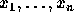
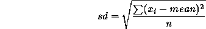
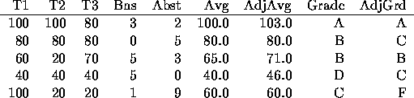

| Making the Grade |
Mr. Chips has a simple grading scheme that lends itself to automated computation. You will write a program that will read in his students' grades, bonus points, and attendance record, compute the student's grades, and output the average grade point of the class.
Mr. Chips grades as follows. All tests are based on 100 points and all test grades are between 0 and 100 points. If he has given more than 2 tests then he will drop the lowest test grade for each student before computing student averages. After computing student averages he computes the overall class average (mean) and standard deviation (sd). The cutoff points for grades are: an average one sd above the mean is an A, an average the mean but < one sd above the mean is a B, an average one sd below the mean but < the mean is a C, and an average < one sd below the mean is a D.
For every two bonus points accrued by a student Mr. Chips increases their computed average by 3 percentage points. Thus, if students have one bonus point, their averages are not bumped at all. If they have 4 or 5 bonus points, their averages are bumped by 6 percentage points, and so on. Bumping of averages based on bonus points takes place after the grade cutoff points have been determined.
Finally, for every 4 absences, students lose one letter grade (from A to B, B to C, C to D, and D to F). For example, if they have 9 absences they will lose two letter grades. Students cannot get a grade lower than F. If students have perfect attendance, they gain one letter grade; although they cannot get a grade higher than an A. During his computations, Mr. Chips always rounds his results to the nearest tenth. In summary, Mr. Chips drops a student's lowest test grade if more than 2 tests have been administered, computes each student's average, computes the class mean and sd, adjusts the students' averages based on bonus points, determines the student's unadjusted grades, and then adjusts the grades based on attendance.
The average grade point (avg grd pnt) of a class is determined by using 4 points for each A, 3 points for each B, 2 points for each C, 1 point for each D, and 0 points for each F. The total points for the class are added together and divided by the number of students in the class (which is always at least 2).
The standard deviation sd of a list of numbers  is:

If the calculated standard deviation is less than 1 then Mr. Chips uses 1 in place of the standard deviation for grade calculation.
Suppose Mr. Chips has 5 students and has given 3 tests. The following table shows the grades, number of bonuses and days absent, plus the computed average (with lowest test dropped), the adjusted average (with bonus), the unadjusted grade and the adjusted grade (with attendance). The mean and sd used to determine letter grade cutoffs are 69.0 and 20.1. For example, for an unadjusted B, one's average must be greater than or equal to 69.0 and less than 89.1.The avg grd pnt is 2.2

The first line contains an integer N between 1 and 10 describing how many of Mr. Chip's classes are represented in the input. The first line for each class contains two integers S and T. S is the number of students in the class (1 < S < 31) and T is the number of tests the students took (1 < T < 11). The next S lines will each represent one student in the class. A student line first lists each of their T test scores as integers between 0 and 100 inclusive, and then lists their bonus points and their number of absences.
There should be N+2 lines of output. The first line of output should read MAKING THE GRADE OUTPUT. There will then be one line of output for each of Mr. Chip's classes showing that class's average grade point. The final line of output should read END OF OUTPUT.
3 3 2 100 50 2 5 60 60 17 1 20 10 0 0 5 5 100 80 90 80 90 0 0 80 80 80 80 80 0 0 50 50 50 50 50 0 0 100 100 20 20 20 0 0 30 30 30 30 30 0 0 10 4 79 56 59 89 4 5 100 89 96 79 6 2 80 80 80 76 1 3 76 76 76 76 5 4 58 78 67 75 4 0 100 96 100 95 1 2 47 49 46 45 0 5 67 98 59 87 5 5 23 45 52 54 2 7 78 75 79 79 3 3
MAKING THE GRADE OUTPUT 3.0 3.2 2.4 END OF OUTPUT